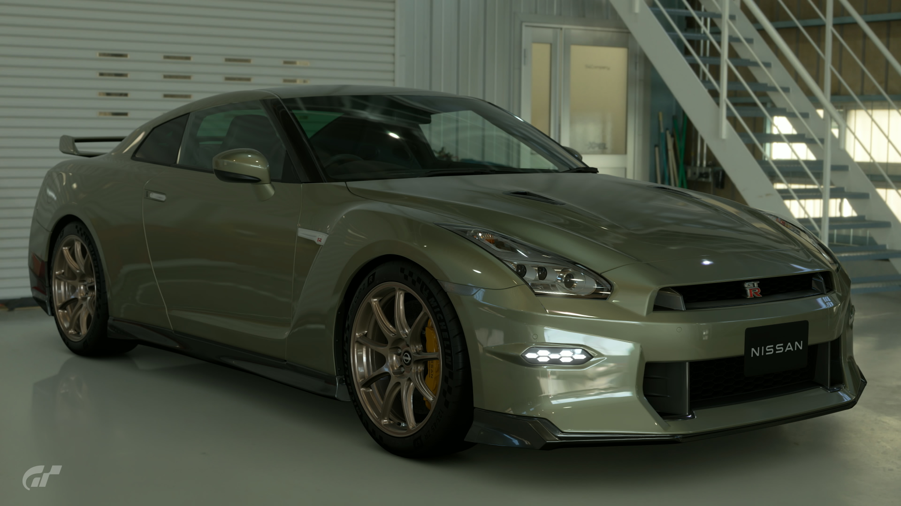
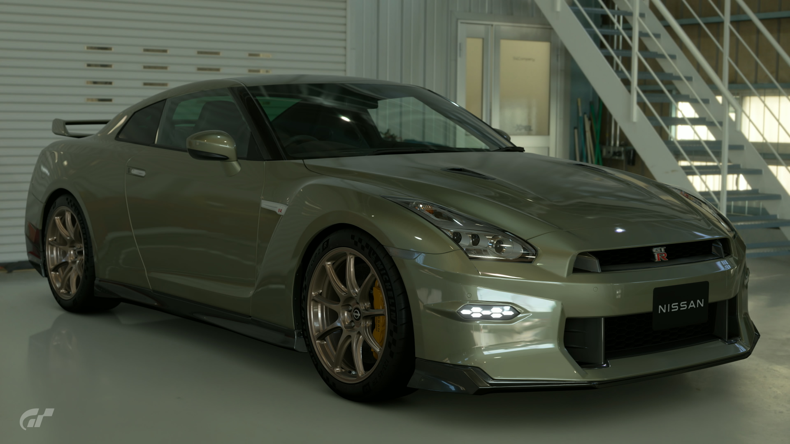

2024 Nissan GT-R R35 T-Spec
Since its debut in 2007, Nissan has consistently introduced upgrades to the GT-R on an almost annual basis. When the 15th-anniversary model was revealed in 2022, many believed it would mark the end of an era. Defying these expectations, Nissan continued to refine the GT-R, leading to the release of the 2024 model. Featuring a new aerodynamic model, the car benefits from enhanced cooling and improved downforce. The electronic suspension has also been further refined. And the T-spec model incorporates carbon-ceramic brakes and a specially calibrated suspension. These advancements elevate the GT-R to new heights in the evolution of the touring car.
- Brand New
- Stock
- 6AT
- Saitama, Japan
- Millenium Jade
- 565hp
¥12,750,000